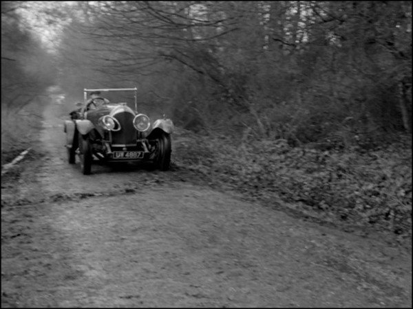
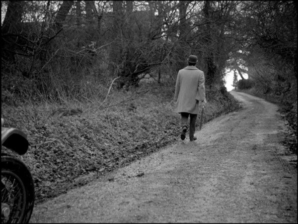
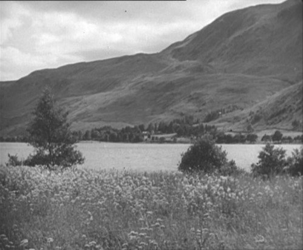
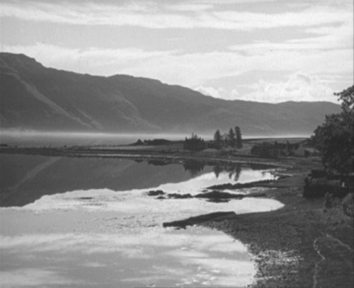
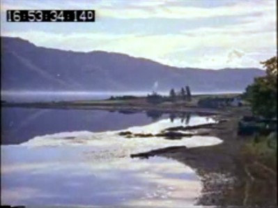
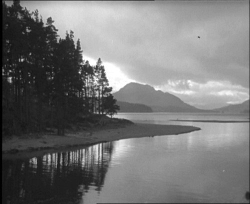

|
|
HELP FIND THE FOLLOWING LOCATIONS
PAGE 4
THE AVENGERS:
The House That Jack
Built (Don Leaver:
January 1966)
Unknown 1:
When the tyres have been slashed on the Bentley and Steed goes on foot,
its
slightly uphill and there's a building on the left there in the
distance. I
don't think its Rectory Lane. Any ideas?


 If this was
short directly after
smashing through the
barrier then this was the access road to Shenley Lodge. Its altogether
different now having been tarmaced and lots of trees and bushes removed.
If this was
short directly after
smashing through the
barrier then this was the access road to Shenley Lodge. Its altogether
different now having been tarmaced and lots of trees and bushes removed.
THE
AVENGERS: Castle De'Ath
(James Hill: August 1965)
Establishing shots of Scotland. No firm ideas, but World
Backgrounds
have
images on their database from the following Lochs; Loch Duich, Loch
Tummel,
Loch Rannoch, Loch Ness and Loch Earn.
Unknown 1:

Unknown 2:


 Currently
on the World backgrounds
database as WB(30)5319 -"T/S Scottish Lake And Shore. Mountains In B/G.
Reflections Of Sky And Mountains In Lake"
Currently
on the World backgrounds
database as WB(30)5319 -"T/S Scottish Lake And Shore. Mountains In B/G.
Reflections Of Sky And Mountains In Lake"
Strome Castle Loch Carron,
Stromemore, Ross and Cromarty, Scotland:
(Identified by Sietse Postma, August 2023)

Loch Laggan,
Inverness-shire, Highland, Scotland: (from Kinloch
Laggan)
(Identified by Sietse Postma, August 2023)

Think you know a spot? Need a bigger image? Email me.
< Previous | Index | Avengerland | Next >
Copyright © 2023 Anthony R. McKay